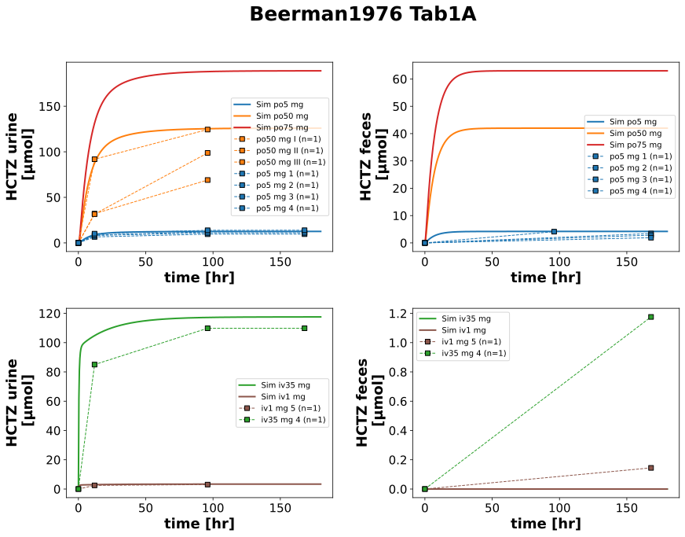
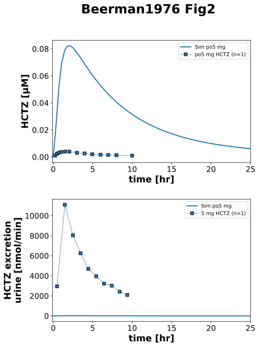
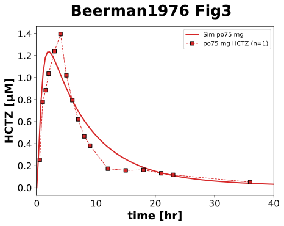

|  |
|  |
|  |
../../../../experiments/studies/beerman1976.py
"""
Conversion of radioactivity
1 Ci = 3.7×10^10 decays per second
C14: 62.4 mCi/mmol = 62.4E-3 *3.7*10^10 CPS/mmol = 62.4E-3/60 *3.7*10^10 CPM/mmole
=> 1 mmole = 62.4E-3/60 * 3.7*10^10 CPM
=> 1 mmole = 38480000 CPM
=> 1 CPM = 1/38480000 mmole
"""
from typing import Dict
import pandas as pd
from sbmlsim.data import DataSet, load_pkdb_dataframe
from sbmlsim.fit import FitMapping, FitData
from sbmlsim.plot import Axis, Figure
from sbmlsim.simulation import Timecourse, TimecourseSim
from sbmlutils.console import console
from pkdb_models.models.hydrochlorothiazide.experiments.base_experiment import (
HCTZSimulationExperiment,
)
from pkdb_models.models.hydrochlorothiazide.experiments.metadata import (
Health, Tissue, ApplicationForm,
Dosing, Route, Fasting, Coadministration,
HCTZMappingMetaData,
)
from pkdb_models.models.hydrochlorothiazide.helpers import run_experiments
class Beerman1976(HCTZSimulationExperiment):
"""Simulation experiment of Beermann1976.
Oral dosing of 5, 50, 75 mg HCTZ and intravenous dosing of 1 and 35 mg HCTZ.
"""
doses = [
5,
50,
75,
35,
1,
]
routes = [
"po",
"po",
"po",
"iv",
"iv",
]
colors = {
5: "tab:blue",
50: "tab:orange",
75: "tab:red",
35: "tab:green",
1: "tab:brown",
}
def datasets(self) -> Dict[str, DataSet]:
dsets = {}
for fig_id in ["Tab1A", "Fig2", "Fig3"]:
df: pd.DataFrame = load_pkdb_dataframe(
f"{self.sid}_{fig_id}", data_path=self.data_path
)
for label, df_label in df.groupby("label"):
dset = DataSet.from_df(df_label, self.ureg)
if fig_id == "Tab1A":
dset.unit_conversion("value", 1 / self.Mr.hctz)
if fig_id == "Fig3" and label.startswith("hctz"):
dset.unit_conversion("value", 1 / self.Mr.hctz)
dsets[label] = dset
# console.print(dsets.keys())
# console.print(dsets)
return dsets
def simulations(self) -> Dict[str, TimecourseSim]:
Q_ = self.Q_
tcsims = {}
for kd, dose in enumerate(self.doses):
route = self.routes[kd]
tcsims[f"hctz_{route}{dose}"] = TimecourseSim(
Timecourse(
start=0,
end=180 * 60, # [min]
steps=500,
changes={
**self.default_changes(),
f"{route.upper()}DOSE_hctz": Q_(dose, "mg"),
},
)
)
return tcsims
def fit_mappings(self) -> Dict[str, FitMapping]:
mappings = {}
# urine and feces
for dset_id in self._datasets:
if not dset_id.startswith("amount"):
continue
tokens = dset_id.split("_")
route = tokens[-2][-2:]
dose = int(tokens[-2][4:-2])
individual = tokens[-1]
tissue = "urine" if "urine" in dset_id else "feces"
if route == "iv":
application_form = ApplicationForm.SOLUTION
else:
if dose == 5:
application_form = ApplicationForm.SUSPENSION
elif dose == 50:
application_form = ApplicationForm.CAPSULE
mappings[f"fm_hctz_{route}{dose}_{individual}_{tissue}"] = FitMapping(
self,
reference=FitData(
self,
dataset=dset_id,
xid="time",
yid="value",
count="count",
),
observable=FitData(
self,
task=f"task_hctz_{route}{dose}",
xid="time",
yid=f"A{tissue}_hctz",
),
metadata=HCTZMappingMetaData(
tissue=Tissue.URINE if tissue == "urine" else Tissue.FECES,
application_form=application_form,
route=Route.PO if route == "po" else Route.IV,
dosing=Dosing.SINGLE,
health=Health.HEALTHY,
fasting=Fasting.FASTED,
coadministration=Coadministration.NONE,
),
)
# FIXME: conversions
mappings["fm_hctz5po_4"] = FitMapping(
self,
reference=FitData(
self,
dataset="hctz5po_4",
xid="time",
yid="value",
count="count",
),
observable=FitData(
self, task=f"task_hctz_po5", xid="time", yid="[Cve_hctz]"
),
metadata=HCTZMappingMetaData(
tissue=Tissue.PLASMA,
application_form=ApplicationForm.SUSPENSION,
route=Route.PO,
dosing=Dosing.SINGLE,
health=Health.HEALTHY,
fasting=Fasting.FASTED,
coadministration=Coadministration.NONE,
outlier=True # FIXME: conversions
),
)
# FIXME: conversions
mappings["fm_excretion_hctz5po_4"] = FitMapping(
self,
reference=FitData(
self,
dataset="excretion_hctz5po_4",
xid="time",
yid="value",
count="count",
),
observable=FitData(
self, task=f"task_hctz_po5", xid="time", yid="KI__HCTZEX"
),
metadata=HCTZMappingMetaData(
tissue=Tissue.URINE,
application_form=ApplicationForm.SUSPENSION,
route=Route.PO,
dosing=Dosing.SINGLE,
health=Health.HEALTHY,
fasting=Fasting.FASTED,
coadministration=Coadministration.NONE,
outlier=True # FIXME: conversions
),
)
mappings["fm_hctz75po_6"] = FitMapping(
self,
reference=FitData(
self,
dataset="hctz75_po_6",
xid="time",
yid="value",
count="count",
),
observable=FitData(
self, task=f"task_hctz_po75", xid="time", yid="[Cve_hctz]"
),
metadata=HCTZMappingMetaData(
tissue=Tissue.PLASMA,
application_form=ApplicationForm.TABLET,
route=Route.PO,
dosing=Dosing.SINGLE,
health=Health.HEALTHY,
fasting=Fasting.FASTED,
coadministration=Coadministration.NONE,
),
)
# console.print(mappings)
return mappings
def figures(self) -> Dict[str, Figure]:
return {
**self.figure_Tab1A(),
**self.figure_Fig2(),
**self.figure_Fig3(),
}
def figure_Tab1A(self) -> Dict[str, Figure]:
name = "Tab1A"
fig = Figure(
experiment=self,
sid=name,
num_rows=2,
num_cols=2,
name=f"{self.__class__.__name__} {name}",
)
plots = fig.create_plots(xaxis=Axis(self.label_time, unit="hr"), legend=True)
plots[0].set_yaxis(label=self.label_hctz_urine, unit=self.unit_hctz_urine)
plots[1].set_yaxis(label=self.label_hctz_feces, unit=self.unit_hctz_feces)
plots[2].set_yaxis(label=self.label_hctz_urine, unit=self.unit_hctz_urine)
plots[3].set_yaxis(label=self.label_hctz_feces, unit=self.unit_hctz_feces)
# simulation
for kd, dose in enumerate(self.doses):
route = self.routes[kd]
kr = 0 if route == "po" else 1
for ky, yid in enumerate(["Aurine_hctz", "Afeces_hctz"]):
plots[kr * 2 + ky].add_data(
task=f"task_hctz_{route}{dose}",
xid="time",
yid=yid,
label=f"Sim {route}{dose} mg",
color=self.colors[dose],
)
# data urine
for dset_id in self._datasets:
if not dset_id.startswith("amount"):
continue
tokens = dset_id.split("_")
route = tokens[-2][-2:]
dose = int(tokens[-2][4:-2])
individual = tokens[-1]
kr = 0 if route == "po" else 1
ky = 0 if "urine" in dset_id else 1
plots[kr * 2 + ky].add_data(
dataset=dset_id,
xid="time",
yid="value",
count="count",
label=f"{route}{dose} mg {individual}",
color=self.colors[dose],
)
return {
fig.sid: fig,
}
def figure_Fig2(self) -> Dict[str, Figure]:
# FIXME: conversion issues
name = "Fig2"
fig = Figure(
experiment=self,
sid=name,
num_rows=2,
num_cols=1,
name=f"{self.__class__.__name__} {name}",
)
plots = fig.create_plots(xaxis=Axis(self.label_time, unit="hr", min=-0.1, max=25), legend=True)
plots[0].set_yaxis(self.label_hctz, unit=self.unit_hctz)
plots[1].set_yaxis(self.label_hctz_excretion_urine, unit=self.unit_hctz_excretion_urine)
# simulation
for kp, yid in enumerate(["[Cve_hctz]", "KI__HCTZEX"]):
plots[kp].add_data(
task=f"task_hctz_po5",
xid="time",
yid=yid,
label=f"Sim po5 mg",
color=self.colors[5],
)
# data
plots[0].add_data(
dataset=f"hctz5po_4",
xid="time",
yid="value",
count="count",
label=f"po5 mg HCTZ",
color=self.colors[5],
)
plots[1].add_data(
dataset=f"excretion_hctz5po_4",
xid="time",
yid="value",
count="count",
label=f"5 mg HCTZ",
color=self.colors[5],
)
return {
fig.sid: fig,
}
def figure_Fig3(self) -> Dict[str, Figure]:
name = "Fig3"
fig = Figure(
experiment=self,
sid=name,
num_rows=1,
num_cols=1,
name=f"{self.__class__.__name__} {name}",
)
plots = fig.create_plots(
xaxis=Axis(self.label_time, unit="hr", min=-0.1, max=40), legend=True
)
plots[0].set_yaxis(self.label_hctz, unit=self.unit_hctz)
# simulation
plots[0].add_data(
task=f"task_hctz_po75",
xid="time",
yid="[Cve_hctz]",
label=f"Sim po75 mg",
color=self.colors[75],
)
# data
plots[0].add_data(
dataset=f"hctz75_po_6",
xid="time",
yid="value",
count="count",
label=f"po75 mg HCTZ",
color=self.colors[75],
)
return {
fig.sid: fig,
}
if __name__ == "__main__":
run_experiments(Beerman1976, output_dir=Beerman1976.__name__)
{kind=link}
{kind=link}
{kind=link}